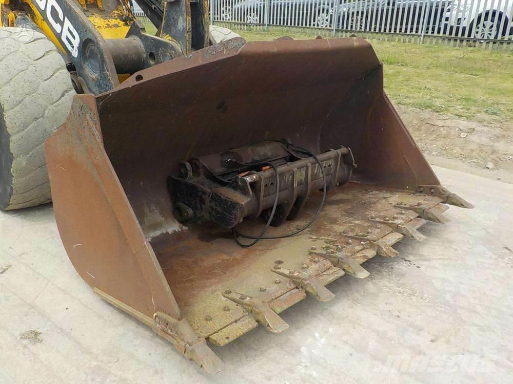

Welcome to padangos
Naujos padangos - naujos-padangos.lt
2020.10.30 04:11Prisijungti Susisiekite su mumis Susisiekite dabar: +370 611 87779
Naujos padangos internetu
Krepšelis 0 Prekė Prekės (tuščia)Prekių nėra
Turi būti nustatyta Pristatymas 0,00 € VisoPirkti
Prekė sėkmingai pridėta į krepšelį Kiekis Viso Krepšelyje yra 0 prekė (-ės). Krepšelyje yra 1 prekė. Prekės viso Viso pristatymas (visai siuntai) Turi būti nustatyta Viso Pridėti daugiau prekių Užsakyti Menu Prekių katalogas Padangos Žieminės padangos Vasarinės padangos Universalios padangos Lengvųjų automobilių padangos Krovininės padangos Motociklų padangos Žemės ūkio padangos Industrinės padangos Visureigių padangos Mikroautobusų "C" padangos Džipų padangos Vilkikų padangos Priekabų padangos Sunkvežimių padangos Sportinės padangos Pristatymas Apmokėjimas Garantija Grąžinimas Visi gamintojai Accelera Achilles Advance Advance Tyre agro ADVANCE TYRE agro/indst ADVANCE TYRE kravas Advance Tyre krovininės Aeolus AGRICA Alceed Alliance Altenzo Amberway Annaite Antares Anteo kravas Anteo krovininės Aoteli Aplus Apollo Apollo kravas Apollo krovininės Aptany Ardent Ardent (Joyroad) Arivo Armour Armstrong Artum Artum (Comforser) ATJAUNOTAS (kravas) Atlas Atturo Aufine AUPLUS Aurora Austone Autogreen Autogrip Avalanche Avon Avon (Cooper) Barum BCT Bestdrive Bestrich BF GOODRICH BFGoodrich BKT Blacklion Boristar Boristar (Comforser) Boto Bridgestone Bridgestone akcija Briway Cachland Carlisle Ceat Centara Centara (Joyroad) CHANGFENG kravas Changfeng krovininės Charmhoo Chengshan Collin s Collins/Profil Comforser Compasal Compasal kravas Compass Condor Constancy Continental Cooper Cratos Cultor DAEWOO Dailyway Dayton Debica DELI Delinte Diamondback Diplomat DIVERSE DIVERSEN Dmack DOUBLE Double Coin Double Star DOUBLE STAR kravas Doublestar Doublestar krovininės Dunlop DURATRUN Duraturn Ecovision Electra EP Tyre Eracle Esa Tecar Eternity Eurotyre Evergreen EVERGREEN / JINYU Evergreen/Jinyu Evermax Falken Farroad Farroad (Saferich) Federal Firemax Firenza Firestone Firststop Formula Fortuna Fortune Fortune (Chengshun) Fronway Fulda FULL RUN kravas Full Run krovininės Fullrun Fullrun (Comforser) Fullway G&H Gajah Tunggal Galaxy General General Tire Geyer&Hosaja Ginell Ginell (Comforser) Gislaved Giti Giti kravas Giti krovininės Glob-Gum Goform Golden Crown Golden Tyre GoldenCrown kravas GoldenCrown krovininės Goldline Goldway Goodride Goodride kravas Goodride krovininės Goodyear Green Max Greenmax Greentrac GREMAX Grenlander Gripmax GT Radial GT RADIAL (kravas) GT Radial (krovininės) GTK GTR GTRADIAL GTR Habilead Haida Hankook HANKOOK (kravas) Hankook (krovininės) Headway Heidenau Hemisphere Hercules Hifly Hilo Horizon HWA-Fong (Duro) Ilink Imperial Infinity Insa Turbo Interstate Invovic IRC Tyre Jinyu Joyroad Kabat Kama Kapsen Kelly Kenda Keter Kinforest King Meiler KINGS Kings Tire Kingstar Kiti KITOS Kitos Pad Kleber Kormoran Kpatos Kumho Kumho/Marshal Lakesea Landsail Lanvigator Lassa Laufenn Lauffen Leao Lexani Ling Long LingLong LingLong kravas LingLong krovininės Long March Longmarch Luckyland Mabor Magna Malatesta Malatesta kravas Malatesta krovininės Malatesta-atnaujintos Malhotra Maloya Marangoni Marcher Mark Ma Mark Ma (Tri-Ace) Markgum Marshal Master Mastercraft Mastersteel Matador Matrax Maxam Maxtrek Maxxis Maxxis krovininės Maxxis moto Mazzini Medalist Mentor Meteor Metzeler Metzeler moto Michelin Mileking Milemore Milestone Minerva Minnell Mirage Mitas Mitas moto Momo Tires Motrio MRF MRL Multirac Multirac (Comforser) Multistar Nankang Neolin Nereus Nexen Nokian Nordexx Nordexx (Duraturn) Nordman Norrsken Norrsken-atnaujintos Novex Onyx ONYX kravas Onyx krovininės Opals Orium Ovation Ozka Paxaro Petlas Pharos Pirelli PIRELLI (kravas) Pirelli (krovininės) Pirelli moto Platin Pneu Laurent Point S Point-S Points Powertrac Powertrac kravas Powertrac Premiorri Primex Primwell Profil Profil-atnaujintos Provato RACEALONE Radar Rapid REIFEN HINGHAUS RIEPAS dažādas Riken Roadcruza Roadmarch Roadstone Roadtec Rockstone Rodatec Rosava Rotalla Routeway Rovelo ROYALBLACK Runderneuert Russ Rydanz Saetta Saferich Sailun SAILUN kravas Sailun Krovininės Sava Sava moto Seiberling Semi-Pro Semperit Silverstone SOARWAY Sonar Sonny Speedways Sportiva Star Performer Starfire Starmaxx Stomil Sumitomo Sunew Sunfull Sunitrac Sunny Sunote Sunwide Superia SWT Taifa(TEFF) Taurus Tekpro TEST Three-A Tigar Toledo Torque Tourador Toyo Tracmax Traxmac Trazano TREKPRO Trelleborg Tri Ace Tri-Ace Triangle Triangle kravas Triangle krovininės Tristar Tyfoon U-Xcent Uniglory Unigrip Uniroyal Veloce Viatti Viking Voyager Vredestein Wanli Westlake WESTLAKE (kravas) Westlake (krovininės) Westlake Premium Winda Windforce Windforce krovininės Winrun Winter Contact Wolf Yatone Yokohama Zeetex Zeknova Zestino Zeta Kontaktai Atgal Rekomenduojame 52,75 € Pristatymas 0-1 d.d. Išpardavimas!225/65R17 APLUS A919 102H M+S E C 71 dB
52,75 € Į krepšelį Plačiau Pristatymas 0-1 d.d.
Prekių likutis: 4
59,00 € Pristatymas per 0-1 d.d. Išpardavimas!225/50R17 Kormoran Snow 98V XL 2020 m. E C 72 dB
Padangos pagamintos 2020 m.
59,00 € Į krepšelį Plačiau Pristatymas per 0-1 d.d.Prekių likutis: 50+
35,00 € Pristatymas per 0-2 d.d. Išpardavimas!Sunny NW211 205/55R16 91H C C 72 dB
Naujos padangos. 2020 m.
35,00 € Į krepšelį Plačiau Pristatymas per 0-2 d.d.Prekių likutis: 50+
33,99 € Pristatymas per 0-1 d.d Išpardavimas!195/65R15 Kormoran Road Performance 91V Padangos C C 71 dB
Kormoran - tai Michelin grupės padangos, pagamintos Europoje.
33,99 € Į krepšelį Plačiau Pristatymas per 0-1 d.dPrekių likutis: 50+
62,75 € Pristatymas 1-2 d.d. Išpardavimas!Kleber / BF GOODRICH G-Grip All Season 2 205/55R16 91H C B 68 dB
KLeber / BFGoodrich
62,75 € Į krepšelį Plačiau Pristatymas 1-2 d.d.Prekių likutis: 20+
49,75 € Pristatymas 0-1 d.d. Išpardavimas!195/55R16 Nexen NBlue HD Plus 87H C C 69 dB
Pagamintos P. Korėjoje
49,75 € Į krepšelį Plačiau Pristatymas 0-1 d.d.Prekių likutis: 4
19,99 € Pristatymas per 0-2 d.d. Išpardavimas!KLEBER 215/55R16 Dynaxer HP3 93 W 2016 m. E B 69 dB
2016 m.
19,99 € Į krepšelį Plačiau Pristatymas per 0-2 d.d.Prekių likutis: 1
112,50 € Pristatymas per 0-1 d.d. Išpardavimas!Padangos 275/45R20 GRIPMAX SUREGRIP AS XL 110W 2020 m. B C 72 dB
Pagaminta 2020 m.
112,50 € Į krepšelį Plačiau Pristatymas per 0-1 d.d.Prekių likutis: 4
56,50 € Pristatymas per 0-1 d.d. Išpardavimas!Padangos GOLDLINE GL 4SEASON LT 215/65R16C 109T 2020 m. E E 73 dB
Pagaminta 2020 m.
56,50 € Į krepšelį Plačiau Pristatymas per 0-1 d.d.Prekių likutis: 4
33,99 € Pristatymas per 0-1 d.d. Išpardavimas!Padangos 195/65R15 Sunfull SF982 91T 2020 m. E E 72 dB
Pagaminta 2020 m.
33,99 € Į krepšelį Plačiau Pristatymas per 0-1 d.d.Prekių likutis: 8
36,75 € Pristatymas per 0-1 d.d. Išpardavimas!Padangos 205/55R16 Sunfull SF982 91H 2020 m. F E 72 dB
Pagaminta 2020 m.
36,75 € Į krepšelį Plačiau Pristatymas per 0-1 d.d.Prekių likutis: 20+
43,00 € Pristatymas per 0-1 d.d Išpardavimas!Padangos 225/45R17 Sunfull SF982 94H XL 2020 m. E E 72 dB
Pagamintos 2020 m.
43,00 € Į krepšelį Plačiau Pristatymas per 0-1 d.dPrekių likutis: 15
Greitas pristatymas (dažniausiai per 1-2 d.d.)
Venipak kurjeris padangas pristato į visą Lietuvos, Latvijos ir Estijos teritoriją - prieš pristatant pasiskambina, suderina Jums patogų pristatymo laiką.
Konsultacija ir pagalba telefonu +370 611 87779
Konsultacija I-V 9-18 val. VI 10-15 val.
Saugus atsiskaitymas
Už prekes atsiskaityti galite grynais arba kortele kurjeriui arba bankiniu pavedimu į įmonės sąskaitą.
Naujos padangos internetu
Dauguma vairuotojų nori tinkamai pasirūpinti savo automobiliais, tad padangų pasirinkimas gali tapti tikru galvos skausmu. Padangos daro įtaką tiek kuro sąnaudoms, tiek automobilio triukšmo lygiui, o svarbiausia jos atsakingos už tinkamą transporto priemonės sukibimą su kelio danga ir saugumą.
Mes siūlome įsigyti padangas internetu, kad sutaupytumėte laiko, kurį skirtumėte važinėjimui po įvairias parduotuves.
Padangų pasirinkimas pagal automobilį
Padangos pagal automobilio modelį renkamos atsižvelgiant į tris parametrus: aukštį, plotį ir skersmenį. Pavyzdžiui jei padanga pažymėta skaičiais: 215/60 R15 tai reikš, kad jos plotis yra 215 milimetrų, aukštis 60% padangos pločio, o skersmuo 15 colių.
Padangas pagal šiuos parametrus lengvai rasite naudodamiesi mūsų internetinės parduotuvės filtravimo įrankiu.
Žieminės padangos
Renkantis žiemines padangas pirmiausia norime, kad jos suteiktų reikiamą sukibimą su kelio danga ir užtikrintų saugumą. Šios padangos turi M+S žymėjimą, o protektorius turi papildomus griovelius.
Rekomenduojama naudoti žiemines padangas, kurios yra pagamintos ne seniau nei prieš 5 metus.
Vasarinės padangos
Vasarinės padangos turi gerai išstumti vandenį esant šlapiai kelio dangai, taip iki minimumo sumažindamos akvaplanavimo susidarymo galimybę.
Į kokius dar padangų techninius duomenis atsižvelgti?
Be sezoniškumo ir išmatavimų renkantis padangas, reikia atsižvelgti į kuro sąnaudų efektyvumo, triukšmo lygio, sukibimo su šlapia kelio danga parametrus. Šiuos duomenis pagal ES reikalavimus privalo nurodyti padangų gamintojas. Kuro sąnaudų ir sukibimo parametrai žymimi abėcėlės raidėmis A efektyvumas yra aukščiausias, o triukšmo lygis matuojamas decibelais, žemesnis skaičius reiškia mažesnį triukšmo lygį.
Taip pat reikėtų atkreipti dėmesį ir į padangų pagaminimo datą, norint jog padangų parametrai nepakistų, pagaminimo data turėtų būti ne senesnė nei 5 metai.
Padangų užsakymas internetu
Nusprendę kokių padangų reikia būtent Jūsų automobiliui, užsisakykite jas internetu mūsų parduotuvėje, o jos bus pristatytos artimiausiu metu.
Visuomet stengiamės, jog mūsų klientai galėtų įsigyti padangas pigiau. Mūsų padangos, nesvarbu ar tai bus Vilnius, Kaunas, Klaipėda ar bet kuris kitas miestas, klientą pasiekia maksimaliai greitai.
Skaityti plačiau...
Suskleisti...
Naujienlaiškiai
FacebookSekite mus
Kategorijos
Padangos Žieminės padangos Vasarinės padangos Universalios padangos Lengvųjų automobilių padangos Krovininės padangos Motociklų padangos Žemės ūkio padangos Industrinės padangos Visureigių padangos Mikroautobusų C padangos Džipų padangos Vilkikų padangos Priekabų padangos Sunkvežimių padangos Sportinės padangos Lengvųjų automobilių padangos Žieminės padangos Vasarinės padangos Universalios padangosInformacija
Susisiekite su mumis Kontaktai Pristatymas Apmokėjimas Garantija Naujos padangos internetu Privatumo politika Taisyklės Grąžinimas Duomenų tvarkytojai Draugai ir partneriai Padangų gamintojai Straipsniai Naujos-Padangos.Lt - tai internetinė naujų padangų parduotuvė. Prekiaujame visų tipų padangomis. Siūlome itin platų padangų asortimentą, greitą pristatymą, saugų atsiskaitymą, garantijas. naujos-padangos.lt © 2019 | Internetinių svetainių / puslapių kūrimas : HostPartner.lt™ | Talpinama Profesionalus hostingasMano paskyra
Mano užsakymai Mano grąžinimai Mano suteiktos nuolaidos Mano adresai Mano asmeninė informacija Mano kuponaiParduotuvės informacija
Sudomino UAB, Registracijos adresas - Paribio g. 30-43 Vilnius LT-08103 Padangų surinkimu ir perdirbimu rūpinasi - VĮ Padangų importuotojų organizacija. Susisiekite dabar: +370 611 87779 El. paštas: info@naujos-padangos.lt Privatumo politika Aš nesutinku Aš sutinku Privatumo politika Aš nesutinku Aš sutinku Privatumo politika Aš nesutinku Aš sutinku